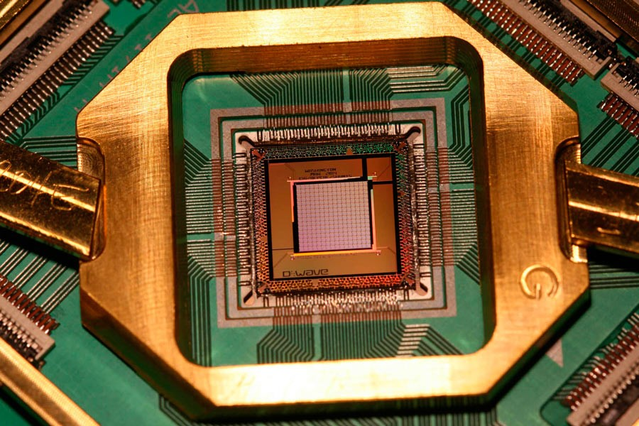

Позвонить
Позвонить
Области применения квантовых компьютеров
-
Топовые компьютеры для игр
Многие геймеры впечатлены скоростью обработки, которую предлагает квантовый компьютер, и им может быть любопытно играть в очень большие игры на высоких частотах кадров на квантовых компьютерах. Возможно, в будущем игры на квантовых компьютерах позволят играть в очень большие игры. В настоящее время невозможно играть в большие игры, потому что квантовые компьютеры не работают по классическим компьютерным алгоритмам, а аппаратное обеспечение не достигло своего превосходства. Однако для тестирования на квантовых компьютерах было разработано много небольших игр, таких как Quantum Battleship. Разработка игр для квантового компьютера требует различных методов алгоритмов и языка программирования. И такой тип языка программирования разрабатывается Microsoft под названием Q #. Этот новый язык программирования будет работать как на классических компьютерах, так и на квантовом компьютере, а также будет использовать преимущества аппаратного обеспечения квантового компьютера.
